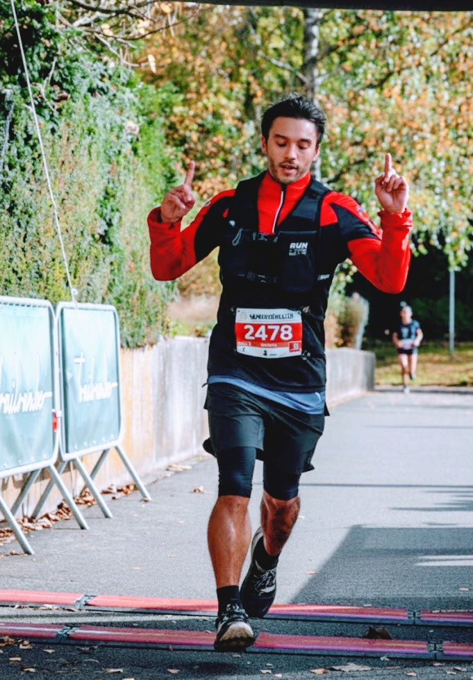

About Me
Who I Am
I am a Data Professional (Data Engineer, data analyst and developer) with almost a decade of experience designing and maintaining complex data ecosystems for large-scale financial institutions. Throughout my career, I have specialized in the full data lifecycle—from architecting ETL pipelines and ensuring data quality to delivering advanced analytics that drive strategic business decisions.
To ensure I stay at the forefront of the industry, I am currently pursuing a Master’s Degree in Data Science. This academic journey is focused on mastering state-of-the-art solutions.
I am driven by a profound interest in Artificial Intelligence, not merely as a tool for technical optimization, but as a way to improve the final user experience.

Visual Art & Photography
Beyond data and analytics, I am deeply passionate about visual storytelling through photography. My work under MotionKaptur focuses on capturing authentic moments that tell compelling narratives. Photography is more than a hobby for me—it’s a creative outlet that allows me to see the world differently.
For many years, I worked as a freelancer specializing in event photography, particularly festival photography. I’ve had the privilege of capturing unforgettable moments at major festivals like Tomorrowland, Intents Festival, and for the city of Brussels. This work allowed me to travel across multiple countries and to discover new places.
Whether it’s composing the perfect shot or designing an elegant data visualization, both disciplines demand attention to detail, a keen eye for patterns, and the ability to communicate complex ideas simply and powerfully.
Sports & Active Lifestyle
Sports have been a defining part of my life. Growing up, I was passionate about basketball and volleyball, which taught me teamwork, strategy, and competitive spirit. Today, I’ve evolved my athletic pursuits toward endurance and functional fitness challenges. I’m deeply committed to Hyrox and running—from short distances to full marathons—and actively participate in multiple races and competitions throughout the year.
These endeavors have become more than just physical challenges; they’re a deliberate practice in discipline and building sustainable healthy habits. Each training session, each race, reinforces the importance of consistency, incremental progress, and the power of dedicated effort over time.
An active lifestyle isn’t just essential to my well-being—it’s fundamental to who I am.
